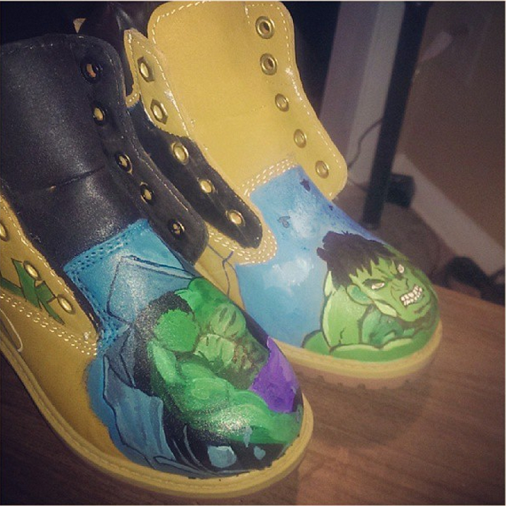
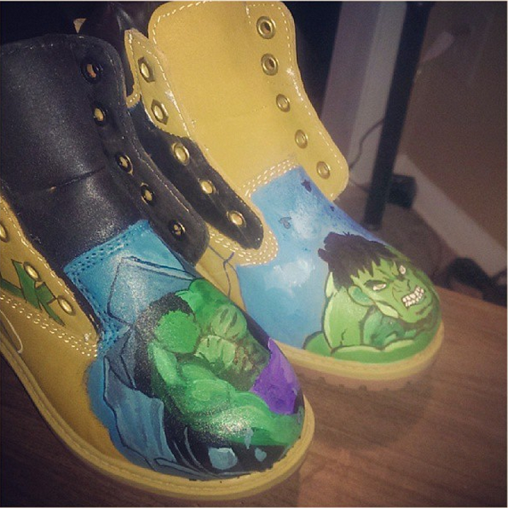

Welcome to Custom Stains
The World Children's Festival
is the ‘Olympics’ of our creativity and
co-creation. Held every four years since 1999, the
WCF has evolved into our largest international
celebration and a permanent quadrennial
event in our Nation's Capital.
We bring together our diverse global communities to share with them a transformative experience that empowers us to shape the future and change the world.
We'll setup the 'World Stage' setup at 4th Street NW of the National Mall with the U.S. Capitol as backdrop! You will meet America's leaders, enjoy our wonderful performances, and see whom we honor with the 'World Children's Award'. Then from 11:00 am until 5:30 pm you can chose from a dozen workshops and activities and performances. Learn and have fun!
 

Check Us Out